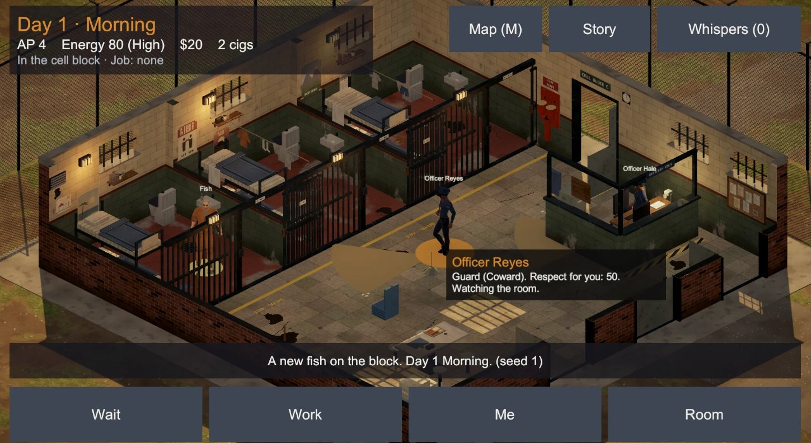
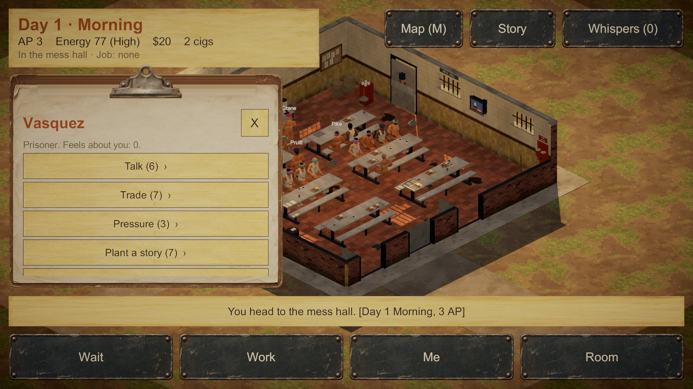
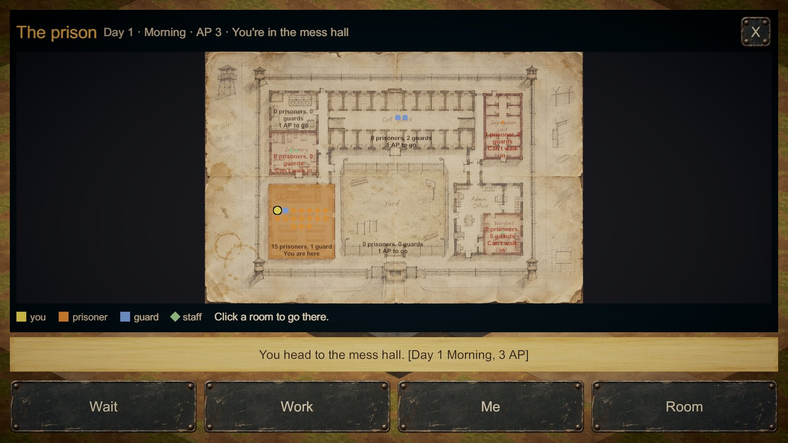
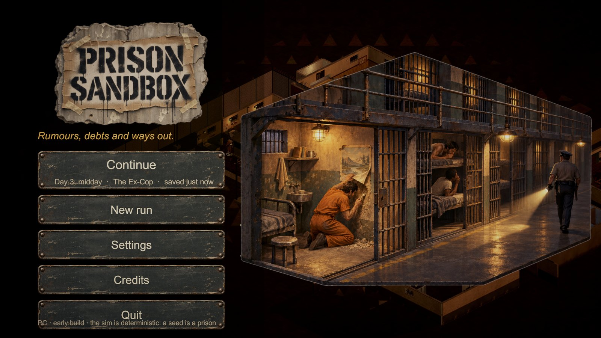

A turn-based prison life sim in Unity 6. Every prisoner, guard and staff member is a simulated person with traits, feelings, gossip and a backstory, and every way out runs through them.
You arrive as a new prisoner with a few action points a day. You click people, objects and doors, and spend your points on work, talk, trade and trouble. There is no crafting menu. Items and know-how come through people, so the game is about who you know and what they believe about you.
Guards have a type (brutal, lazy or coward) and keep track of how much they respect you. Prisoners have their own way of passing on news: honest, sneaky, liar or paranoid. So a rumour you plant spreads, drifts as it moves, and may be believed or checked. Whispers is where you hear rumours and check them.
There are seven ways out: a tunnel, the sick bay, the laundry, a riot, a guard's uniform, parole, and the Warden's desk. Each one needs the right people on your side.



The simulation is plain C# with no Unity code in it, and an assembly definition enforces that. Unity only draws it. The same simulation runs headless from a command-line tool, which is how I test and balance it.
All randomness goes through one seeded generator, so the same seed gives the same run. A save is a replay of the player's logged actions, and each run prints a fingerprint, so I can see at once when a change alters outcomes.
When a run ends, the Chronicle writes the story of your stay from what actually happened in it. It runs offline and gives the same story for the same run.
716 simulation tests and 146 Unity EditMode tests pass. I balance the escape routes against 6,400 automated runs before and after each change, measuring which routes get used and on what day. Every sound in the game is generated from my own code.

It is the same thing I care about on my Project Zomboid server and in my survivor NPCs: a world that keeps running by its own rules, where stories come out of the system instead of a script.